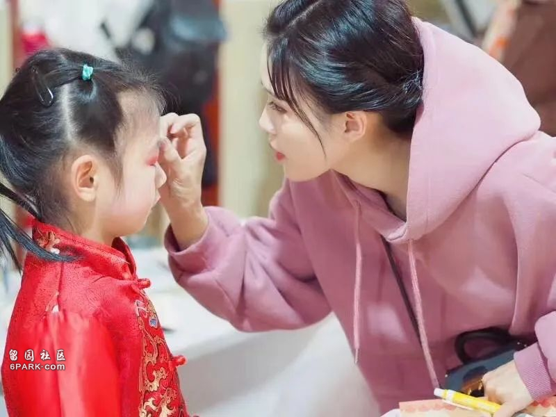
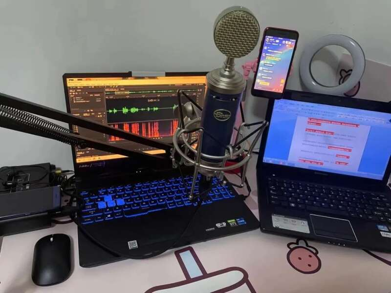
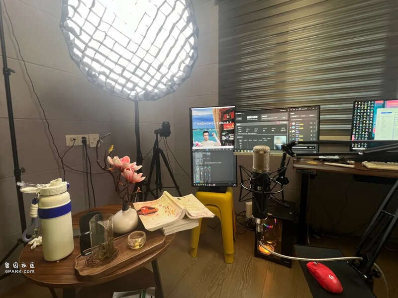

过去几年，随着二次元产业的发展以及《声临其境》等配音综艺的出现，配音演员这一职业逐渐进入大众视野，也成为不少有演员梦的年轻人的理想职业。但成为配音演员或许不难，难的是靠配音专业谋生。
据公开报道，当下国内的配音演员数量已经超过10万人。然而，与大多数艺术相关行业一样，配音也是一个赢家通吃的行业，圈内流传着“头部吃不完、腰部吃不饱、底层吃不上”的说法。
与此同时，影视剧市场收缩、游戏版号阶段性停摆，给配音市场带来一场无声的风暴。市面上能够提供的商业机会，让中尾部配音演员生存更难。开直播、做主播，成为不少从业者的选择。过去几年，配音行业经历了哪些变化？那些“为爱入局”的年轻人在过怎样的生活？我们跟其中的一些人聊了聊。
入行10年，遭遇职业瓶颈
成为配音演员十多年，洛迪对行业的冷暖变化深有感受。洛迪2009年左右入行，2014年开办了自己的配音工作室，配过广播剧、有声书、游戏、动漫，其中效果最好的作品在平台上有1.3亿点赞量。
为了在配音专业上得到系统训练，洛迪还特地从大连来到北京拜师。
当时他刚参加工作，为了按时上课，他不得不在周五晚上从大连坐一晚上火车到北京，上两天课再坐夜车赶回去上班，这样一直持续了半年。
从最初“为爱发电”，洛迪渐渐打开局面，陆续能承接一些游戏、动漫配音等商配工作。在2018年以前，游戏市场有大量配音需求，洛迪的工作室一个月能接不少订单。虽然洛迪声音条件不完全符合主流市场需求，但擅长特型声音的他却迎来属于自己的曙光。
但这之后，游戏版号迎来一段停摆期，版号获批越来越难，游戏配音的需求在迅速减少。动漫、影视剧市场也大不如前。如今，洛迪的工作室“两三个月才接一个游戏配音”，他说，两年前完成的商单直到现在都没结账，有的游戏公司已经倒闭。
他不得不慎重地考虑线上配音市场留下的空间还有多大，以及像他一样的配音演员未来的职业出路在哪里。
与洛迪面临同样困境的还有30岁的大连女孩北北。北北原来是一名沪漂，已经在上海的艺术培训机构做了8年的播音老师。

当播音老师时的北北
但是疫情期间线下教学无法开展，北北的收入也直线下降。为了维持在上海的开支，北北开始尝试进入网络配音圈，做一些有声小说的配音兼职。以她的资历和从业背景，录制六七十个小时的收入，也不过两三千元，时薪不到50元。作为0资源0背景的配音新人，仅靠有声书并不能让她维持在上海的生活。北北每个月要负担2700的房租，“每天为了生活而焦虑，又没有什么收入，经济压力特别大。”
北北说，最困难的一段时间，她买了一箱干脆面，每天两包干脆面，就能挨过一整天。配音演员邓先生同样深耕网配圈，但是与北北不同的是，邓先生2020年大学毕业后就开始录有声小说和广播剧，在圈子里收获了一批粉丝。他在大学学的是表演，但由于父母身体一直不太好，“从我准备艺考的时候就意识到我没办法离家太远，因为我的父母需要我，我也没办法去做北漂、横漂去拍戏，所以只能选择居家这样一份工作。”作为网配圈小有名气的CV（Character Voice，可理解为配音演员），邓先生在有声书平台收入优渥。
但表演专业毕业的他希望能用声音演绎更大众化的作品，能获得一个直面观众的舞台。在国内，像北北、洛迪、邓先生一样的配音演员不在少数。他们或因热爱、或因生计入行，当行业下行，不得不重新考虑出路。有数据统计，当下国内的配音演员已超10万人。而目前配音市场能够提供的配音机会，显然不足以支撑如此庞大的从业人员。不同领域的配音演员或主动或被动地，都不得不面临职业道路的第二次抉择。
线上市场收缩，配音演员寻求转型
配音行业也经历过一段高光时期。愚三笑已经从事了28年的配音工作，他曾为多部影视剧配音，也担任过多部影片的配音指导，在业内颇有名气。他说，上个世纪90年代的配音圈还很封闭，配音的工作主要在幕后，为电视台的影视剧和专题片等做配音。但是影视行业在2000年以后迎来快速发展，尤其是《甄嬛传》等爆款影视剧的诞生。 2012年成了中国影视产业发展的顶峰时期，据广电总局数据统计，在那一年，全国生产电视剧共计506部、17703集。影视产业的壮大也带动影视剧配音需求的暴涨。同时，互联网和音视频APP的迅猛发展，也为配音演员的职业提供多样化出路。愚三笑说，尤其是网络电影大爆发，“很多配音爱好者只要努努力，也可以去做配音演员。”
愚三笑在直播
配音演员逐渐分化出影视、动漫、游戏、有声书、广播剧等垂直领域。最早为爱发电的洛迪就是一个配音爱好者，在有声书、广播剧等“网配圈”打开局面以后，也顺利挤进“商配圈”，开始接游戏、动漫等配音商单。但是，随着经济形势的变化，影视行业的风向急转直下，开机的项目越来越少，传统的影视配音份额也在不算减少。据广电总局数据统计，2023年全国制作发行电视剧156部、4632集。这个剧集产量还不到2012年的四分之一。影视配音需求也开始大幅下滑。
同时，也有一种不可忽略的声音。愚三笑谈到，影视创作越来越倾向于使用演员的原声， “现在演员的台词功底越来越好，评奖条件也苛刻了，如果用配音可能没有评奖的资格。很多制作成本高的电影就不需要那么多配音演员。”有主流媒体曾公开质疑演员严重依赖配音，“原声台词是演员的基本功，莫让演员成‘演贝’。”除了线上市场收缩，游戏版号发放阶段性地按下“暂停键”，游戏动漫配音需求也在收缩。洛迪说，自己的工作室从2018年以后，接到的游戏和动漫配音商单就在逐渐减少。这个变化有数据为证。
《2018年1-6月中国游戏产业报告》的数据显示，2018年上半年游戏市场整体收入为1050亿元，同比仅增长5.2%，而与过去三年21.9%、30.1%、26.7%的增幅相比，行业增长速度大幅下滑。即便不久后游戏版号逐渐放开，他的配音工作室也再没回到之前的运营境况。除了线上配音市场收缩，配音行业内部还存在从业者晋升体系模糊的问题。“你没有办法说我配了多少个作品，我就晋升到一个等级了，就会接到一些更加优质的单。”北北说，只有头部的一些配音演员，他们能靠配音本职赚到钱，剩下的绝大多数都无法单纯以此为生，所以很多人把配音当成兼职来做。因此，业内也流传着“头部吃不完、腰部吃不饱、底层吃不上”的说法。

北北录制有声书的场景
北北、洛迪等，并非是配音行业的头部演员，但却是配音领域基数最大的从业者。在经历疫情、裁员、和行业的迭代后，他们期望能找到一个稳定的“舞台”。“有人选择去拍网剧，从幕后走到台前，但不是所有声音演员都有幕前表演的天赋，转型到幕前的是极少数。”在抖音平台成为一名声音主播，成为大多数人的选择。“我估计大部分配音演员都在尝试直播，这是一个趋势。”洛迪说。入驻短视频平台，除了通过直播打赏获得收入维持生计外，还有一个重要原因：“现在很多影视、游戏等甲方客户找配音团队，不仅考虑配音演员的专业能力，也会考虑配音演员的知名度和粉丝量。很多主播试水直播，也是为了增加粉丝量和扩大知名度。”
放下包袱，硬控直播
切换新渠道，总会到新问题。
对于从老师转型做主播的北北而言，她首先需要面对的是内心巨大的心理落差。刚开始直播的时候，她很担心周围的人能搜到她，“家人和朋友都不理解，觉得你好好的一个主持老师不做了，去做女主播。”北北说，当老师的时候，学生都很尊重你，上一节课就是一节课的钱，但是做直播的收入需要靠运气，“你不找人PK，也不带货，你怎么赚钱呢？”北北也给自己打气，她相信凭借自己的专业能力，结合传统文化，只要慢慢去学习，做出成绩只是时间问题。虽说只是“时间问题”，但获取结果的过程并不容易。到现在北北还记得她的第一场直播，选在了去年315当天，“一个童叟无欺的开播时间”。当时的北北对直播间还十分懵懂。她发现直播间跟观众的互动，与自己平时在线上给学生上课有很大的不同。“上课你可以引导，但是直播间需要互动，需要想办法留住人。”
北北直播间
主播需要揣摩观众的喜好，寻找用户感兴趣的话题。一场2小时的直播下来，北北浑身是汗。有时候，她也会遇到很多不太友好的声音，“有人说我长得丑，有人说我衣服丑，有的人让我别播了，继续回去打螺丝。”虽然经常被网友气哭，但她依然会把网友的评价默默记下来，美颜太高了就调低一点，今天的衣服不好看下次就换一套。直播间的观看人数一直处在个位数，这个状态持续了两个月。到了第三个月，她直播间的人气开始破局，一路上扬。现在，她的直播间人气最高的时候，上千人听她在线读书。读《三国演义》时，人物众多，性格鲜明，讲话的语调也千差万别，北北一个人就能实现“一秒变声”。她记得人物角色最多的一场戏是诸葛亮舌战群儒，北北一个人需要在短时间内切换十多个人物的音色。
“有的说话磕巴，有的语速很急，”她会根据剧情需要做出反应。比如，“被打了一拳，是隐忍不发的，还是喘着大气的，都需要揣摩。”北北说，好的配音演员可以通过声音为每一个人物角色注入灵魂。粉丝打赏的时候，赶上她正说“张飞”的时候，她还会切换“张飞”的声音，拱手说一句“感谢哥哥”。北北的嗓音清亮甜美，但是《三国演义》这样的小说又充满狭义情怀，所以大家都喜欢她身上的反差感。

邓先生的直播现场
邓先生也是一名转型直播的配音演员。他会在每天上下午两个时段，直播讲热门小说《知否》，他不仅会调动专业的配音能力来朗读，还会把故事中的情节适时表演出来，读到动情之处经常声泪俱下。“我是表演专业出身，在直播间可以一人分饰好几个角色，让大家更沉浸式地看我的直播。这能凸显我的风格，更能凸显我的专业能力。”读到精彩的地方，粉丝们会在弹幕里打出一连串“好听”，邓先生享受这个时刻，“当我一个人面对直播间的镜头，网线的另一端在看我的直播，会叫好，是对我专业的认可，我享受大家的掌声。”在他的长期摸索下，直播间在线人数最高达到2500人，目前已经累计关注近14万人。对于一个放弃此前粉丝圈子从头再来的配音演员而言，直播已经成为他展示专业能力的主阵地。
中尾部配音演员破局新思路
配音演员转型读书主播，对平台而言，无疑给用户提供了更多优质内容。
北北直播的时候，偶然看到过一条弹幕。一个年轻人说，自己的爷爷不太会玩手机，但是每天总拿着表，掐着点，一旦到了北北的直播时间，老人就念叨着要听听这个小姑娘讲故事，“他可能不知道这是个什么平台，甚至不知道什么是直播，但他就是每天守着听我讲故事。”而对于转型直播赛道的配音演员们，最显著的收获首先是一份稳定的收入。北北的抖音粉丝只有20多万，但每个月的直播打赏收入能达到六七千元，这是北北目前最主要的收入来源。这笔收入对回到老家大连的她而言，恰好可以覆盖她的房贷和生活开支。主播邓先生在抖音开播后，每月也能获得数千元至上万元的打赏收入。但更重要的是，在他看来，直播是个很好地展示自己专业能力的机会，同时这种方式又能很好地反哺他们的创作。
正在直播的邓先生
邓先生说，很多科班出身的应届毕业生每年只有很少一部分人去拍戏，成名的就更少了，很多人转行去做销售，卖车卖房，难得的是，“直播间这个平台，让我们面对镜头、面对观众，展示自己的专业能力。”
当然，不止一个配音演员提到开启直播后，他们触碰到更多的机会。北北经常在后台会收到很多邀约她配音的商业合作。有合作方看到了她的直播间，发现她音色特别，最终促成了一次商业配音合作。做主播的这一年，北北收获了很多认同感，“他们很愿意为了传统文化，为了我的才艺去买单，这也给了我很大的满足感和自信。”
邓先生偶会也通过直播接触到线下教学培训的工作邀约，这个机会给他带来上万元的收入，而他更大的希望，是通过直播间走上更多舞台。“我的抖音做好了，也可能会认识更优秀的导演、制片人，有了好的配音作品，也可以反哺我的直播间。
”如今，在传统配音演员的机会减少，收入不均衡的环境下，洛迪、北北、邓先生等这些中尾部配音新人的职业新选择，促使配音界正或主动或被动地迎接新一轮的变革。据了解，抖音等直播平台也面向配音演员、声优等有声音优势的群体推出了相关扶持计划，开辟了“讲故事”等内容品类的赛道。他们相信，直播这条新渠道，正在成为配音行业的一渠活水。